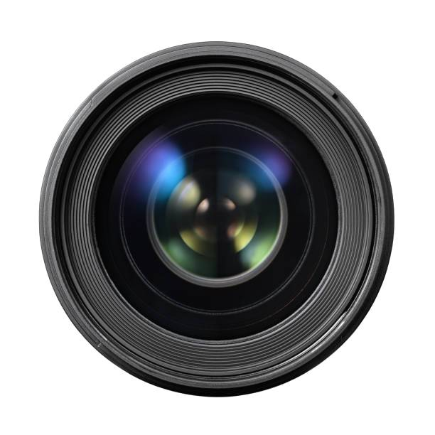

Tady najdete odpovědi na otázky, které se nás klienti ptají nejčastěji. Pomůže vám zjistit, jak si focení objednat, kolik trvá a kde probíhá.

Jak si objednám focení?
Objednání je jednoduché a zabere pár minut:
- Napište nám e-mail nebo zavolejte a řekněte, jaké focení chcete.
- Společně se domluvíme na termínu a místě.
- Přijdete na focení v domluvený den.
- Do několika dnů dostanete upravené fotografie.
Kolik focení stojí?
Ceny všech služeb jsou v ceníku na úvodní stránce. Základní portrétní focení stojí 900 Kč za hodinu, svatební focení od 5 000 Kč.
Za jak dlouho dostanu hotové fotografie?
Záleží na druhu focení. Přehled je v tabulce.
| Služba | Délka focení | Dodání fotografií |
|---|---|---|
| Portrétní focení | 1 hodina | do 5 dnů |
| Rodinné focení | 2 hodiny | do 7 dnů |
| Komerční focení produktů | 3 hodiny | do 7 dnů |
| Svatební focení | celý den | do 30 dnů |
Kde focení probíhá?
Portréty a produkty fotíme v našem studiu. Rodinné a turistické focení probíhá venku, místo si vybereme společně. Adresu studia najdete na stránce Kde nás najít.
Co si mám vzít na focení?
Vezměte si oblečení, ve kterém se cítíte dobře. Vhodné jsou jednobarevné věci bez velkých nápisů. Na focení venku se oblékněte podle počasí.